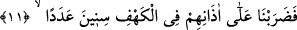
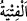
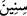

ver ve bize, (şu) durumumuzdan bir kurtuluş yolu hazırla! demişlerdi.
“O (yiğit) gençler” yâni Rum’un ileri gelenlerinden olan gençleri, Dakyanus Allah’a
ortak koşmaya zorlamış, onlar bunu kabul etmemiş ve ondan kaçıp “mağaraya
sığınmışlar ve:”
Buradaki mağara, onların Anchilus adlı dağında bulunan Cirom adlı mağaradır
“ el-Fitye”, “ el-fetâ”nın çoğuludur. Genç, kuvvetli delikanlı demektir. Bu
ifâde “ el-gulâm (genç çocuk)” kelimesi gibi istiâre ile yaşlı da olsalar köleler için
kullanılır. Nebî (a.s.) şöyle buyurur: “Sizden kimse abdî (kulum), emetî (cariyem) de
demesin. Bilakis “oğlum”, “kızım, yavrum” desin.”[159] Ebu Yûsuf: “Kim ben falanın
fetâsıyım/kölesiyim” derse bu onun köleliği ikrâr ettiği anlamına gelir.” demiştir.
“Rabbimiz! Bize tarafından” avamın gözlerine gizli olan özel rahmet hazinelerinden
“rahmet ver” ki mağfiretimize, rızkımıza ve düşmanlarımıza karşı güven içinde
olmamıza medâr olsun “ve bize, (şu) durumumuzdan bir kurtuluş yolu hazırla!
demişlerdi.” Yâni, Rabbimiz bizim işimizi ıslâh et, düzenle. Kâfirlerden kaçma ve sana
tâat işimizi tamamla ve bize bir kurtuluş yolu hazırla, bizi matlûbumuza götüren yola
ulaştır.
İşte bunların olduğu, gençlerin toplanıp bir araya gelip böyle iltica ettikleri zamanı
hatırla, an demektir.
11. Bunun üzerine biz de o mağarada onların kulaklarına nice yıllar perde koyduk
(uykuya daldırdık.)
“Bunun üzerine biz de o mağarada onların kulaklarına nice yıllar perde koyduk
(uykuya daldırdık.)” Kulaklarına, işitmelerini engelleyen bir perde çektik. Yâni onları,
uyuttuk. Burada, ağır uyku kulaklarına sesin ulaşmasını engelleyen perdelemeye
benzetilmiştir. Burada Ashâb-ı Kehfin uyutulmaları anlatılırken kulaklarına perde
koyulması özellikle zikredilmiştir. Oysa uykuda kulakla birlikte diğer duyu organları da
bir şey hissetmezler. Bu, kulakların genellikle uyurken örtülmeye muhtaç
olmalarındandır. Çünkü çoğu kez, özellikle uyuyanın yalnız ve halktan ayrı olduğu
zaman kulakların açık olması uyanmaya yol açar. Onların duâlarına icâbet edilerek
kulaklarına perde koyulması, sağa ve sola çevirilmeleri, diriltilmeleri ve diğer hususlar
onları sıradan sebeplere sarılan kimselerin gözlerinden gizler.
Buradaki “nice yıllar”dan maksat, ileride (25. âyette) zikredileceği üzere onların
mağarada 309 yıl kalmalarıdır. Burada “ sinîn (seneler)” kelimesinin, “ adeden
(nice)” lafzı ile nitelenmesi ya onların hiç uyandırılmadan uyutuldukları sürenin
çokluğunu vurgulamak içindir. Böyle olması Allah’ın sonsuz kudretini vurgulama
bakımından daha uygundur. Ya da bu sürenin azlığını belirtmek içindir. Bu da kıssanın